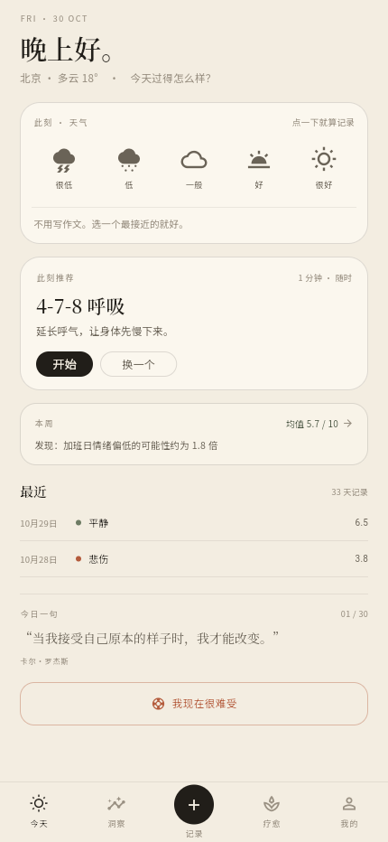
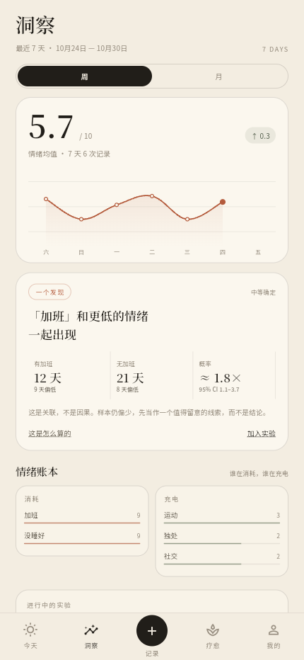
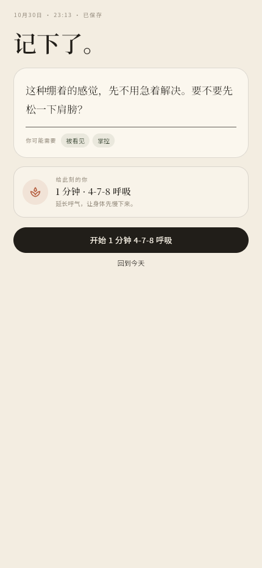

心迹TRACE
ONE-PAGER · 2026.10
PERSONAL PROJECT · PRODUCT DESIGN / INTERACTION / FLUTTER
心迹
把情绪记录，变成一件可以做完的小事。
面向 18–28 岁年轻人的情绪日记与自我关怀产品。从公开研究、竞品拆解、产品定义、交互设计，到 Flutter MVP、加密本地库与 API 契约，独立完成。核心不是“记得更多”，而是 3 秒记下、30 秒看懂、5 分钟做点什么。
问题 / Problem
市场不缺记录工具，也不缺疗愈内容。缺的是从记录到行动的那一步。
18–24 岁抑郁水平在各年龄组最高；6.5% 成年人有 3 个以上持续症状；仅 59% 觉得心理咨询便利。
三个断点：记录门槛、分析不可解释、推荐不合时宜。
方案 / Solution
记录 → 理解 → 行动 → 复评的最小闭环，而不是又一个树洞或内容库。
- 3 秒记录：点天气即存，文字/语音是可选增强。
- 证据化洞察：样本、反例、lift、95% CI，只讲关联。
- 闭环推荐：按情绪 × 场景 × 时长给 1/5/15 分钟动作。
关键设计 / Decisions
- 不做开放式 AI 陪伴：只做反思卡，规避依赖与合规风险。
- 前 12 个月不做社区：隐私定位与内容安全成本不支持。
- 急救入口常驻：12356、联系人、60 秒着陆、安全计划。
技术 / Engineering
- Flutter + Hive CE：整库 AES-256，主密钥在 Keychain/Keystore；笔记 AES-GCM 预留 E2EE 同步。
- InsightEngine：Beta(1,1) 收缩 + Bootstrap 1000 次 + 多重检验；33 天数据得到 lift ≈ 1.83，CI 1.1–3.7。
- OpenAPI 3.0：幂等写入、增量拉取、软删除、危机资源独立命名空间。
- 可运行：Flutter Web 构建成功；9 个界面 Playwright 验收；0 console error；本地数据刷新后仍在。
验证 / Evidence
6/6单元测试通过
0analyze issue
9浏览器验收界面
1.8×触发因素 lift

TODAY / 3 秒记录
INSIGHTS / 证据卡
REFLECTION / 先接住